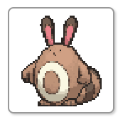
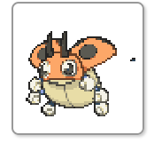
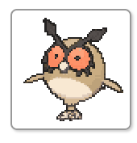
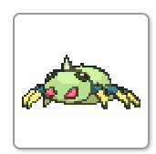

> EXERCÍCIO_09: JUSTIFY-SELF
OBJETIVO: Alinhar itens individualmente dentro de suas células.
:: VISUALIZADOR (DIA vs NOITE) ::

SENTRET

LEDYBA

HOOTHOOT

SPINARAK
(As linhas verticais escuras mostram os limites das 4 colunas)
< VOLTAR AO SISTEMA